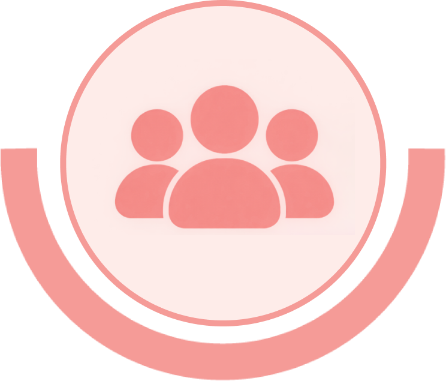
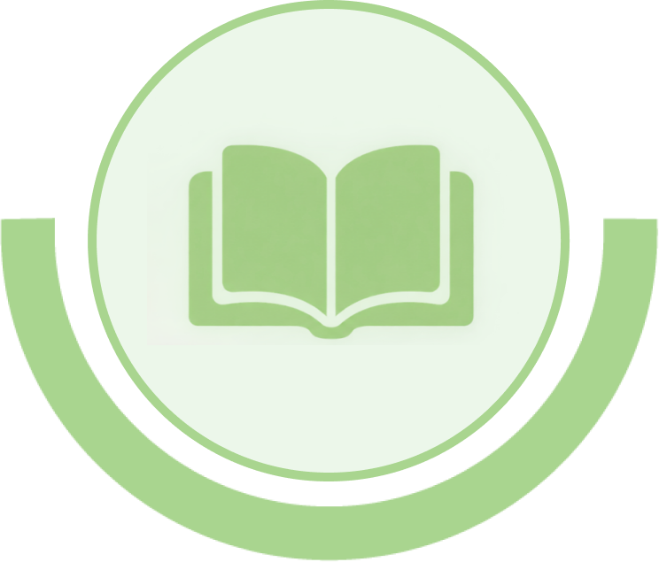

יחידה 6 תקציב ודיווח
רכיבי התקציב התוספתי
רכיבי התקציב התוספתי נקבעים מדי שנה על ידי תוכנית אתחלתא, ומושפעים מן האבחנות שהוצגו בחלק הקודם. רכיבי התקציב המרכזיים הם כוח אדם, תוכן ופעילות ותקורה. סוג הרכיב משפיע על אופן ניהול התקציב ועל אופן הדיווח על התשלומים במימושו.

לחצו על כפתורי שלושת רכיבי התקציב התוספתי למידע נוסף.
לפניכם שלושה רכיבי תקציב. ניתן לעבור בין כפתורי למידע נוסף באמצעות Tab או באמצעות חצי שמאלה וימינה. Enter או רווח פותחים את המידע. לאחר הפתיחה הפוקוס עובר לכפתור הסגירה. לחיצה נוספת על Enter או רווח סוגרת את המידע. ניתן גם לסגור באמצעות Escape. לאחר הסגירה הפוקוס חוזר לכפתור למידע נוסף שממנו נפתח התוכן.

כוח אדם
עוסק בעבודת הצוות האקדמי השותף בפיתוח, בליווי ובהפעלת התוכנית.

תוכן ופעילות
מאפשר להעשיר את פעילות החממות והסדנאות באמצעות מפגשים, סדנאות ופעילויות ייחודיות.

תקורה
מיועדת לתמיכה הארגונית והניהולית הנדרשת להפעלת התוכנית במוסד האקדמי.